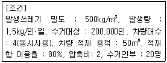
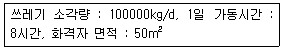
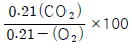
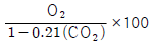
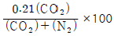
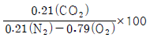
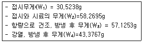
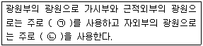
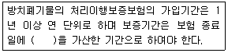

폐기물처리기사 (2015-03-08 기출문제)
1과목: 폐기물 개론
1. 함수율 40%인 쓰레기를 건조시켜 함수율이 15%인 쓰레기를 만들었다면, 쓰레기 톤당 증발되는 수분량은? (단, 비중은 1.0 기준)
- 약 185 kg
- 약 294 kg
- 약 326 kg
- 약 425 kg
(정답률: 75%)

2. 파쇄장치 중 전단파쇄기에 관한 설명으로 틀린것은?
- 고정칼이나 왕복 또는 회전칼과의 교합에 의하여 폐기물을 전단한다.
- 충격파쇄기에 비하여 대체로 파쇄속도가 느리다.
- 충격파쇄기에 비하여 파쇄물의 크기를 고르게 할수 있는 장점이 있다.
- 충격파쇄기에 비하여 이물질 혼입에 강하다.
(정답률: 90%)
3. 지정폐기물인 폐석면의 입도를 분석한 결과에 의하면 d10 = 3 mm, d30 = 6 mm, d60 = 12 mm, 그리고 d90 = 15 mm 이었다. 이 때 균등계수와 곡률 계수는 각각 얼마인가?
- 1, 0.5
- 1, 1.0
- 4, 0.5
- 4, 1.0
(정답률: 86%)
4. 함수율 80%(중량비)인 슬러지 내 고형물은 비중 2.5인 FS 1/3과 비중이 1.0인 VS 2/3로 되어 있다. 이 슬러지의 비중은? (단, 물의 비중은 1.0 이다.)
- 1.04
- 1.08
- 1.12
- 1.16
(정답률: 51%)
5. 새로운 쓰레기 수집 시스템에 관한 설명으로 틀린 것은?
- 모노레일 수송 : 쓰레기를 적환장에서 최종처분장까지 수송하는데 적용할 수 있다.
- 콘베이어 수송 : 광대한 지역에 적용될 수 있는 방법으로 콘베이어 세정에 문제가 있다.
- 관거 수송 : 쓰레기 발생밀도가 높은 곳에서 현실성이 있으며 조대쓰레기는 파쇄, 압축 등의 전처리가 필요하다.
- 관거 수송 : 잘못 투입된 물건은 회수하기가 곤란 하며 가설 후에 경로변경이 어렵다.
(정답률: 72%)
6. 도시폐기물을 X90 = 2.5cm로 파쇄하고자 할 때, Rosin-Rammler 모델에 의한 특성입자 크기(XO)는? (단, n=1로 가정한다.)
- 1.09 cm
- 1.18 cm
- 1.22 cm
- 1.34 cm
(정답률: 74%)
7. 다음 조건을 가진 지역의 일일 최소 쓰레기 수거 횟수는?

- 2회
- 4회
- 6회
- 8회
(정답률: 46%)
8. 쓰레기의 성상분석 절차로 가장 옳은 것은?
- 시료→전처리→물리적조성→밀도측정→건조→분류
- 시료→전처리→건조→분류→물리적조성→밀도측정
- 시료→밀도측정→건조→분류→전처리→물리적조성
- 시료→밀도측정→물리적조성→건조→분류→전처리
(정답률: 88%)
9. 유기물(포도당 C6H12O6) 2kg을 혐기성분해로 완전히 안정화시키는 경우 이론적으로 생성되는 메탄의 체적은? (단, 표준상태 기준)
- 약 0.25 m3
- 약 0.45 m3
- 약 0.75 m3
- 약 1.35 m3
(정답률: 66%)
10. 완전히 건조시킨 폐기물 20g을 취해 회분량을 조사하니 5g 이었다. 이 폐기물의 원래 함수율이 40%이었다면, 이 폐기물의 습량기준 회분 중량비(%)는? (단, 비중은 1.0 기준)
- 5
- 10
- 15
- 20
(정답률: 48%)
11. 서비스를 받는 사람들의 만족도를 설문조사하여 지수로 나타내는 청소상태 평가법의 약자로 옳은 것은?
- SEI
- CEI
- USI
- ESI
(정답률: 85%)
12. pH가 2인 폐산용액은 pH가 4인 폐산용액에 비해 수소이온이 몇 배 더 함유되어 있는가?
- 5배
- 2배
- 100배
- 10배
(정답률: 77%)
13. 수거대상 인구가 10,000명인 도시에서 발생되는 폐기물의 밀도는 0.5 ton/m3 이고, 하루 폐기물 수거를 위해 차량적재 용량이 10 m3인 차량 10대가 사용된다면 1일 1인당 폐기물 발생량은? (단, 차량은 1일 1회 운행 기준)
- 2 kg/인·일
- 3 kg/인·일
- 4 kg/인·일
- 5 kg/인·일
(정답률: 82%)
14. 3,000,000 ton/year의 쓰레기 수거에 4,000명의 인부가 종사한다면 MHT값은? (단, 수거인부의 1일 작업시간은 8시간이고 1년 작업일수는 300일 이다.)
- 2.4
- 3.2
- 4.0
- 5.6
(정답률: 84%)
15. 고형분 20%인 폐기물 10톤을 소각하기 위해 함수율이 15%가 되도록 건조시켰다. 이 건조폐기물의 중량은? (단, 비중은 1.0 기준)
- 약 1.8톤
- 약 2.4톤
- 약 3.3톤
- 약 4.3톤
(정답률: 72%)
16. 어느 폐기물의 밀도가 0.32 ton/m3이던 것을 압축기로 압축하여 0.8ton/m3로 하였다. 부피 감소율은?
- 40%
- 50%
- 60%
- 70%
(정답률: 65%)
17. 다음 중 쓰레기 발생량을 예측하는 방법이 아닌것은?
- Trend method
- Material balance method
- Multiple regression model
- Dynamic simulation model
(정답률: 82%)
18. 쓰레기의 수거노선을 설정할 때 유의할 사항으로 옳지 않은 것은?
- 많은 양의 쓰레기 발생원은 하루 중 가장 나중에 수거한다.
- U자형 회전을 피하여 수거한다.
- 적은 양의 쓰레기가 발생하나 동일한 수거빈도를 받기를 원하는 적재지점은 가능한 한 같은 날 왕복 내에서 수거하도록 한다.
- 가능한 한 시계방향으로 수거노선을 정한다.
(정답률: 95%)
19. 함수율 82%의 하수슬러지 80m3와 함수율 15%의 톱밥 120m3을 혼합 했을 때의 함수율은? (단, 비중은 1.0 기준)
- 42%
- 45%
- 48%
- 55%
(정답률: 78%)
20. 폐기물적재차량 중량이 28500kg, 빈차의 중량이 15000kg, 적재함의 크기는 가로 300cm, 세로 150cm, 높이 500cm 일 때 단위 용적 당 적재량 (t/m3)은?
- 0.22
- 0.46
- 0.60
- 0.81
(정답률: 79%)
2과목: 폐기물 처리 기술
21. 플라스틱을 다시 활용하는 방법과 가장 거리가 먼 것은?
- 열분해 이용법
- 용융고화재생 이용법
- 유리화 이용법
- 파쇄 이용법
(정답률: 64%)
22. 인구가 400000명인 어느 도시의 쓰레기배출 원 단위가 1.2kg/인·일 이고, 밀도는 0.45 t/m3으로 측정되었다. 이러한 쓰레기를 분쇄하여 그 용적이 2/3로 되었으며, 이 분쇄된 쓰레기를 다시 압축하면서 또다시 1/3 용적이 촉소되었다. 분쇄만 하여 매립할 때와 분쇄, 압축한 후에 매립할 때에 양자 간의 년간 매립소요면적의 차이는? (단, Trench 깊이는 4m이며 기타 조건은 고려 안함)
- 약 12820 m2
- 약 16230 m2
- 약 21630 m2
- 약 28540 m2
(정답률: 55%)
23. COD/TOC ＜ 2.0, BOD/COD ＜ 0.1, COD는 500mg/L 미만인 매립연한 10년 이상 된 곳에서 발생된 침출수의 처리공정의 효율성을 틀리게 나타낸것은?
- 활성탄 – 불량
- 이온교환수지 – 보통
- 화학적침전(석회투여) - 불량
- 화학적산화 – 보통
(정답률: 59%)
24. 퇴비화는 도시폐기물 중 음식찌꺼지, 낙엽 또는 하수처리장 찌꺼기와 같은 유기물을 안정한 상태의 부식질(humus)로 변화시키는 공정이다. 다음 중 부식질의 특징으로 옳지 않은 것은?
- 병원균이 사멸되어 거의 없다.
- C/N비가 높아져 토양개량제로 사용된다.
- 물 보유력과 양이온교환능력이 좋다.
- 악취가 없는 안정된 유기물이다.
(정답률: 59%)
25. 최근 국내에서도 도입되고 있는 폐기물 소각재의 용융고화방식에 대한 설명 중 옳지 않은 것은?
- 용융방식에는 코크스 베드식, 아크 용융, 플라즈마 용융 등이 있다.
- 최종 처분되는 폐기물의 부피는 크게 감소시키고, 2차오염의 가능성을 감소시킨다.
- 용융되어 생성되는 슬래그에서 다량의 중금속이 용출된다.
- 생성된 슬래그는 도로포장재 등 자원으로 활용이 가능하다.
(정답률: 52%)
26. 침출수의 혐기성 처리에 대한 설명으로 틀린 것은?
- 고농도의 침출수를 희석없이 처리할 수 있다.
- 중금속에 의한 저해효과가 호기성 공정에 비해 작다.
- 미생물의 낮은 증식으로 슬러지 처리 비용이 감소된다.
- 호기성 공정에 비해 낮은 영양물 요구량을 가진다.
(정답률: 69%)
27. 토양오염복원기법 중 Bioventing에 관한 설명으로 옳지 않은 것은?
- 토양 투수성은 공기를 토양 내에 강제 순환시킬 때 매우 중요한 영향인자이다.
- 오염부지 주변의 공기 및 물의 이동에 의한 오염물질의 확산의 염려가 있다.
- 현장 지반구조 및 오염물 분포에 따른 처리기간의 변동이 심하다.
- 용해도가 큰 오염물질은 많은 양이 토양수분 내에 용해상태로 존재하게 되어 처리효율이 좋아진다.
(정답률: 74%)
28. 매립지 선정에 있어서 고려하여야 하는 항목과 가장 거리가 먼 것은?
- 매립지로 유입되는 쓰레기 성상
- 사후 매립지 이용 계획
- 주변 환경 조건
- 운반도록의 확보 및 지형지질
(정답률: 58%)
29. 밀도가 2.0g/cm3인 폐기물 20kg에 고형화 재료를 20kg 첨가하여 고형화 시킨 결과 밀도가 2.8g/cm3으로 증가하였다면 부피변화율(VCF)은?
- 1.04
- 1.17
- 1.27
- 1.43
(정답률: 61%)
30. 슬러지 매립지 침출수에 함유되어 있는 암모니아를 염소로 처리하려고 한다. 침출수 발생량은 3780m3/d이고, 이를 처리하기 위해 7.7kg/d의 염소를 주입하고 잔류염소농도는 0.2mg/L 이었다면 염소요구량은 몇 mg/L인가?
- 약 4.31
- 약 3.83
- 약 2.21
- 약 1.84
(정답률: 45%)
31. 포도당(C6H12O6)만으로 된 유기물 3.0kg이 혐기성 상태에서 완전부해 된다면 생산되는 메탄의 용적(Sm3)은?
- 약 0.66
- 약 1.12
- 약 1.43
- 약 1.86
(정답률: 61%)
32. 토양오염의 특성에 관한 설명으로 옳지 않은 것은?
- 오염경로가 다양하다.
- 피해발현이 완만하다.
- 오염의 인지가 용이하다.
- 원상복구가 어렵다.
(정답률: 73%)
33. 체의 통과 백분율이 10%, 30%, 50%, 60%인 입자의 직경이 각각 0.⑤mm, 0.15mm, 0.45mm, 0.55mm 일 때 곡률계수는?
- 0.82
- 1.32
- 2.76
- 3.71
(정답률: 71%)
34. 가장 흔히 사용되는 고화처리 방법 중의 하나이며 무기성고화재를 사용하여 고농도의 중금속의 폐기에 적합한 화학적 처리방법은?
- 피막형성법
- 유리화법
- 시멘트 기초법
- 열가소성 플라스틱법
(정답률: 69%)
35. 고형물 농도가 80000ppm인 농축 슬러지량 20m3/hr를 탈수하기 위해 개량제(Ca(OH)2)를 고형물당 10wt% 주입하여 함수율 85wt%인 슬러지 cake를 얻었다면 예상 슬러지 cake의 량(m3/hr)은?
- 약 7.3
- 약 9.6
- 약 11.7
- 약 13.2
(정답률: 44%)
36. 건조된 고형물의 비중이 1.42이고 건조 이전의 슬러지 내 고형물 함량이 40%, 건조중량이 400kg이라고 할 때 건조 이전의 슬러지 케익의 부피는?
- 약 0.5m3
- 약 0.7m3
- 약 0.9m3
- 약 1.2m3
(정답률: 33%)
37. 다음 중 합성 차수막의 분류가 틀린 것은?
- PVC – Thermoplastics
- CR – Elastomer
- EDPM – Crystalline Thermoplastics
- CPE – Thermoplastic Elastomers
(정답률: 56%)
38. 수거대상인구가 350000명인 도시에서 일주일간 수거한 쓰레기의 양이 13000m3이다. 쓰레기 발생량은? [단, 쓰레기의 밀도는 0.35 t/m3 이다.]
- 약 0.0⑤ kg/인 · 일
- 약 0.54 kg/인 · 일
- 약 1.86 kg/인 · 일
- 약 13.0 kg/인 · 일
(정답률: 56%)
39. 퇴비생산에 영향을 주는 요소에 대한 설명으로 옳지 않은 것은?
- 수분이 많으면 공극개량제를 이용하여 조절한다.
- 온도는 55~65℃로 이내로 유지시켜야 병원균을 죽일 수 있다.
- pH는 미생물의 활발한 활동을 위하여 5.5~8.0범위가 적당하다.
- C/N비가 너무 크면 퇴비화기간이 짧게 소요된다.
(정답률: 64%)
40. 공극율이 0.4인 토양이 깊이 5m까지 오염되어 있다면 오염된 토양의 m2당 공극의 체적은 몇 m3인가?
- 1.0
- 1.5
- 2.0
- 2.5
(정답률: 84%)
3과목: 폐기물 소각 및 열회수
41. 소각로에 열교환기를 설치, 배기가스의 열을 회수하여 급수 예열에 사용할 때 급수 출구온도는 몇 ℃ 인가? (단, 배기가스량 : 100kg/hr, 급수량 : 200kg/hr, 배기가스 열교환기 유입온도 : 500℃, 출구온도 : 200℃, 급수의 입구온도 : 10℃, 배기가스 정압비열 : 0.24 kcal/kg ·℃)
- 26
- 36
- 46
- 56
(정답률: 46%)
42. 고체 및 액체 연료의 연소 이론 산소량을 중량으로 구하는 경우, 산출식으로 적절한 것은?
- 2.67C + 8H + O + S (kg/kg)
- 3.67C + 8H + O + S (kg/kg)
- 2.67C + 8H - O + S (kg/kg)
- 3.67C + 8H - O + S (kg/kg)
(정답률: 78%)
43. 전기집진기에 대한 설명으로 틀린 것은?
- 회수가치성이 있는 입자 포집이 가능하다.
- 고온가스, 대량의 가스처리가 가능하다.
- 전압변동과 같은 조건변동에 쉽게 적응하기 어렵다.
- 유지관리가 어렵고 유지비가 많이 소요된다.
(정답률: 71%)
44. 다음 중 표면연소에 대한 설명으로 가장 적합한 것은?
- 코크스나 목탄과 같은 휘발성 성분이 거의 없는 연료의 연소형태를 말한다.
- 휘발유와 같이 끓는점이 낮은 기름의 연소나 왁스가 액화하여 다시 기화되어 연소하는 것을 말한다.
- 기체연료와 같이 공기의 확산에 의한 연소를 말한다.
- 니트로글리세린 등과 같이 공기 중 산소를 필요로 하지 않고 분자 자신 속의 산소에 의해서 연소하는 것을 말한다.
(정답률: 81%)
45. 플라스틱 폐기물의 소각 및 열분해에 대한 설명으로 옳지 않은 것은?
- 감압증류법은 황의 함량이 낮은 저유황유를 회수할 수 있다.
- 멜라민 수지를 불완전 연소하면 HCN과 NH3가 생성된다.
- 열분해에 의해 생성된 모노머는 발화성이 크고, 생성가스의 연소성도 크다.
- 고온열분해법에서는 타르, char 및 액체상태의 연료가 많이 생성된다.
(정답률: 64%)
46. 완전건조된 폐기물 10000 kg/h을 소각할 때 폐기물 중 유기물성분이 60% 이면 굴뚝으로부터 배출되는 배기가스의 열량은 약 몇 kJ/h 인가? (단, 건조 기준으로 유기물의 연소열은 19193 kJ/kg 으로 가정하며, 복사에 의한 열손실은 입력의 5%이고, 발생열은 10% 가 소각재에 잔존한다고 가정한다.)
- 98× 106
- 109× 106
- 116× 106
- 125× 106
(정답률: 49%)
47. 다음의 조건에서 화격자 연소율(kg/m2 · hr)은?

- 185 kg/m2 · hr
- 250 kg/m2 · hr
- 320 kg/m2 · hr
- 2300 kg/m2 · hr
(정답률: 81%)
48. 소각로에서 쓰레기의 소각과 동시에 배출되는 가스성분을 분석한 결과 N2 85%, O2 6%, CO 1%와 같은 조성을 나타냈다. 이 때 이 소각로의 공기비는? (단, 쓰레기에는 질소, 산소 성분이 없다고 가정함)
- 1.25
- 1.32
- 1.81
- 2.28
(정답률: 71%)
49. 연소에 있어 검뎅이의 생성에 대한 설명 중 가장 거리가 먼 것은?
- A중유 ＜ B중유 ＜ C중유 순으로 검뎅이가 발생한다.
- 공기비가 매우 적을 때 다량 발생한다.
- 중합, 탈수소축합 등의 반응을 일으키는 탄화수소가 적을수록 검뎅이는 많이 발생한다.
- 전열면 등으로 발열속도 보다 방열속도가 빨라서 화염의 온도가 저할될 때 많이 발생한다.
(정답률: 80%)
50. 발열량 1000 kcal/kg인 쓰레기의 발생량이 20ton/day인 경우, 소각로내 열부하가 50000 kcal/m3· hr인 소각로의 용적은? (단, 1일 가동시간은 8hr이다.)
- 50 m3
- 60 m3
- 70 m3
- 80 m3
(정답률: 72%)
51. 열분해방법이 소각방법에 비교해서 공해물질 발생면에서 유리한 점이라 볼 수 없는 것은?
- 중금속의 최소부분만이 재(ash)속에 고정되며 나머지는 쉽게 분리된다.
- 대기로 방출되는 가스가 적다.
- 고온용융식을 이용하면 재를 고형화할 수 있고 중금속의 용출은 없어서 자원으로서 활용할 수 있다.
- 배기가스 중 질소산화물, 염화수소의 양이 적다.
(정답률: 69%)
52. 연소방법에 따른 소각로 종류 중 설명이 잘못된것은?
- 준연속식 소각로는 회분식 소각로와 같이 쓰레기를 간헐적으로 투입하나 화격자를 건조층과 연소층으로 구분하여 건조 및 연소속도를 향상 시킨 소각로이다.
- 회분식 기계화 소각로는 재나 불연잔사물의 배출을 자동화하여 회분식 소각로의 단점을 보완한 것이다.
- 회분식 소각로는 간단한 구조를 갖는 것이 일반적이며 처리량은 로당 20ton/day가 일반적이다.
- 완전연속식 소각로는 계장장비를 완비하고 적은 작업인원으로 24시간 연속운전이 가능한 소각로이다.
(정답률: 46%)
53. 분자식 CmHn인 탄화수소가스 1Sm3의 완전연소에 필요한 이론공기량(Sm3)은?
- 4.76m + 1.19n
- 5.67m + 0.73n
- 8.89m + 2.67n
- 1.867m + 5.67n
(정답률: 60%)
54. 공기비가 클 때 일어나는 현상으로 가장 거리가 먼 것은?
- 연소가스가 폭발할 위험이 커진다.
- 연소실의 온도가 낮아진다.
- 부식이 증가한다.
- 열손실이 커진다.
(정답률: 73%)
55. 연소공정 중 연소실에 대한 설명으로 틀린 것은?
- 연소실의 운전척도는 공기/연료비, 혼합 정도, 연소온도 등이 있고 연소실의 크기는 충분히 커야한다.
- 연소실은 1차 및 2차 연소실로 구성되는데 주입 폐기물을 건조, 휘발, 점화시켜 연소시키는 곳은 2차 연소실이다.
- 연소실의 연소온도는 600~1000℃이며, 연소실의 크기는 주입폐기물 톤당 0.4~0.6m3/일로 설계한다.
- 연소로 모양은 직사각형, 수직원통형, 혼합형, 로타리킬른형 등이 있는데, 대부분이 직사각형의 연소로이다.
(정답률: 61%)
56. 다단로 소각로방식에 대한 설명으로 틀린 것은?
- 온도제어가 용이하고 동력이 적게 들며 운전비가 저렴하다.
- 수분이 적고 혼합된 슬러지 소각에 적합하다.
- 가동부분이 많아 고장율이 높다.
- 24시간 연속운전을 필요로 한다.
(정답률: 46%)
57. 가정에서 발생되는 쓰레기를 소각시킨 후 남은 재의 중량은 소각된 쓰레기의 1/5 이다. 쓰레기 100톤을 소각하여 소각재 부피가 20m3이 되었다면 소각재의 밀도는?
- 2.0 톤/m3
- 1.5 톤/m3
- 1.0 톤/m3
- 0.5 톤m3
(정답률: 80%)
58. 10g의 RDF를 열용량이 8600 cal/℃인 열량계에서 연소하였다. 감지된 온도상승은 4.72℃이다. 이 시료의 발열량은 얼마인가?
- 3544 cal/℃
- 3672 cal/℃
- 4⑤9 cal/℃
- 4201 cal/℃
(정답률: 55%)
59. 유동층 소각로에서 슬러지의 온도가 30℃, 연소온도 850℃, 배기온도 450℃일 때, 유동층 소각로의 열효율은?
- 49%
- 51%
- 62%
- 77%
(정답률: 68%)
60. 완전연소일 경우의 (CO2)max의 값(%)은? (단, CO2 : 배출가스 중 CO2량(Sm3/Sm3) O2 : 배출가스 중 량(Sm3/Sm3) N2 : 배출가스 중 량(Sm3/Sm3)




(정답률: 60%)
4과목: 폐기물 공정시험기준(방법)
61. 크롬함량을 자외선/가시선 분광법에 의해 정량하고자 할 때 다음 설명 중 옳지 않은 것은?
- 흡광도는 540nm에서 측정한다.
- 발색 시 황산의 최적농도는 0.1M이다.
- 시료 중 철이 20mg 이하로 공존할 경우에는 다이페닐카바자이드용액을 넣기 전에 피로인산나트륨-10수화물용액(5%) 2mL를 넣어 주면 간섭을 줄일 수 있다.
- 시료의 전처리에서 다량의 황산을 사용하였을 경우에는 시료에 무수황산나트륨 20mg을 넣고 가열하여 황산의 백연을 발생시켜 황산을 제거한 후 황산(1+9) 3mL를 넣고 실험한다.
(정답률: 58%)
62. 강열감량 측정 실험에서 다음 데이터를 얻었다. 유기물 함량은 몇 %인가?

- 49.56%
- 51.68%
- 53.68%
- 95.88%
(정답률: 45%)
63. 온도의 표시방법으로 옳지 않는 것은?
- 실온은 1~25℃ 로 한다.
- 찬곳은 따로 규정이 없는 한 0~15℃인 곳을 뜻한다.
- 온수는 60~70℃를 말한다.
- 냉수는 15℃ 이하를 말한다.
(정답률: 78%)
64. 다음은 자외선/가시선 분광광도계의 광원에 관한 설명이다. ( )안에 알맞은 것은?

- ㉠ 텅스텐램프, ㉡ 중수소 방전관
- ㉠ 중수소 방전관, ㉡ 텅스텐램프
- ㉠ 할로겐램프, ㉡ 헬륨 방전관
- ㉠ 헬륨 방전관, ㉡ 할로겐램프
(정답률: 70%)
65. 크롬의 원자흡수분광광도법에 의한 측정에서 공기-아세틸렌 불꽃으로는 철, 니켈 등에 기인한 방해 영향이 크다. 이 때의 대책으로 가장 적절한 것은?
- 황산나트륨을 1% 정도 넣어서 측정한다.
- 수소-공기-알곤 불꽃으로 바꾸어 측정한다.
- 수소-산소 불꽃으로 바꾸어 측정한다.
- 이소부틸케톤 용액 20 mL를 넣어 측정한다.
(정답률: 64%)
66. X선 회절기법으로 석면 측정시 X선 회절기로 판단할 수 있는 석면의 정량범위는?
- 0.1~100.0 wt%
- 1.0~100.0 wt%
- 0.1~10.0 wt%
- 1.0~10.0 wt%
(정답률: 61%)
67. 유리전극법을 이용하여 수소이온농도를 측정할 때 적용 범위 기준으로 옳은 것은?
- pH를 0.01 까지 측정한다.
- pH를 0.⑤ 까지 측정한다.
- pH를 0.1 까지 측정한다.
- pH를 0.5 까지 측정한다.
(정답률: 75%)
68. 다량의 점토질 또는 규산염을 함유한 시료에 적용되는 시료의 전처리 방법으로 가장 옳은 것은?
- 질산-과염소산-불화수소산에 의한 유기물 분해
- 질산-염산에 의한 유기물 분해
- 질산-과염소산에 의한 유기물 분해
- 질산-황산에 의한 유기물 분해
(정답률: 60%)
69. 유기인의 정제용 컬럼으로 적절치 않은 것은?
- 실리카겔 컬럼
- 플로리실 컬럼
- 활성탄 컬럼
- 실리콘 컬럼
(정답률: 71%)
70. 용출시험방법의 용출조작에 관한 설명으로 옳지 않은 것은?
- 시료액의 조제가 끝난 혼합액은 유리섬유 여과지로 여과하여 진탕용 시료로 사용한다.
- 진탕용 시료는 분당 약 200회, 진폭 4~5cm인 진탕기를 사용하여 6시간 연속 진탕한다.
- 원심분리기를 사용할 필요가 있는 경우는 3000rpm 이상으로 20분 이상 원심분리한다.
- 시료를 원심분리한 경우는 상징액을 적당량 취하여 용출시험용 시료용액으로 한다.
(정답률: 44%)
71. 폐기물공정시험기준(방법)에서 시안분석방법으로 맞는 것은?
- 원자흡수분광광도법
- 이온전극법
- 기체크로마토그래피
- 유도결합플라즈마-원자발광분광법
(정답률: 68%)
72. 총칙에 관한 내용으로 옳은 것은?
- “고상폐기물”이라 함은 고형물의 함량이 5% 이상인 것을 말한다.
- “반고상폐기물”이라 함은 고형물의 함량이 10% 미만인 것을 말한다.
- “방울수”라 함은 4℃에서 정제수 20방울을 적하할 때 그 부피가 약 1mL 되는 것을 뜻한다.
- “온수”는 60~70℃를 말한다.
(정답률: 80%)
73. 폐기물분석을 위한 일반적 총칙에 관한 설명으로 옳지 않은 것은?
- 천분율을 표시할 때는 g/L, g/kg 의 기호를 쓴다.
- “바탕시험을 하여 보정한다” 라 함은 시료에 대한 처리 및 측정을 할 때, 시료를 사용하지 않고 같은 방법으로 조작한 측정치를 빼는 것을 뜻한다.
- 진공이라 함은 따로 규정이 없는 한 15mmH2O 이하를 말한다.
- 방울수라 함은 20℃에서 정제수 20방울을 적하할 때 그 부피가 약 1mL가 되는 것을 뜻한다.
(정답률: 74%)
74. 원자흡수분광광도계에 대해 설명한 내용 중 틀린 것은?
- 광원부, 시료원자화부, 파장선택부 및 측광부로 구성되어 있다.
- 일반적으로 가연성기체로 아세틸렌을, 조연성기체로 공기를 사용한다.
- 단광속형과 복광속형으로 구분된다.
- 광원으로 좁은 선폭과 낮은 휘도를 갖는 스펙트럼을 방사하는 납 음극램프를 사용한다.
(정답률: 68%)
75. 감염성 미생물의 분석방법과 가장 거리가 먼 것은?
- 아포균 검사법
- 열멸균 검사법
- 세균배양 검사법
- 멸균테이프 검사법
(정답률: 75%)
76. pH 표준용액 조제에 대한 설명으로 틀린 것은?
- 염기성 표준용액은 산화칼슘(생석회) 흡수관을 부착하여 2개월 이내에 사용한다.
- 조제한 pH 표준용액은 경질유리병에 보관한다.
- 산성표준용액은 3개월 이내에 사용한다.
- 조제한 pH 표준용액은 폴리에틸렌병에 보관한다.
(정답률: 70%)
77. 자외선/가시선 분광법에서 시료액의 흡수파장이 약 370nm이하일 때 어떤 흡수셀을 일반적으로 사용하는가?
- 10 mm 셀
- 석영흡수셀
- 경질유리흡수셀
- 플라스틱셀
(정답률: 81%)
78. 마이크로파 분해장치에 대한 설명 중 옳지 않은 것은?
- 산과 함께 시료를 용기에 넣어 마이크로파를 가하면 강산에 의해 시료가 산화된다.
- 극성성분들의 빠른 진동과 충돌에 의하여 시료의 분자 결합이 절단되어 시료가 이온상태의 수용액으로 분해된다.
- 유기물이 소량 함유된 시료의 전처리에 자주 이용된다.
- 이 장치는 가열속도가 빠르고 재현성이 좋다.
(정답률: 54%)
79. 유도결합플라스마-원자발광분광기의 일반적인 구성으로 옳은 것은?
- 광원부, 파장선택부, 시료부 및 측광부로 구성된다.
- 시료도입부, 고주파전원부, 광원부, 분광부, 연산 처리부 및 기록부로 구성된다.
- 시료도입부, 시료원자화부, 분광부, 측광부, 연산 처리부로 구성된다.
- 광원부, 분광부, 단색화부, 고주파전원부, 측광부 및 기록부로 구성된다.
(정답률: 64%)
80. 시료채취시 대상폐기물의 양이 10톤인 경우 시료의 최소수는?
- 10
- 14
- 20
- 24
(정답률: 65%)
5과목: 폐기물 관계 법규
81. 환경부장관이나 시도지사가 폐기물처리업자에게 영업정지에 갈음하여 부과할 수 있는 과징금의 최대액수는?
- 1억원
- 2억원
- 3억원
- 5억원
(정답률: 78%)
82. 기술관리인을 두어야 할 폐기물처리시설은?
- 지정폐기물외의 폐기물을 매립하는 시설로 면적이 5천 제곱미터인 시설
- 멸균분쇄시설로 시간당 처리능력이 200킬로그램 인 시설
- 지정폐기물외의 폐기물을 매립하는 시설로 매립 용적이 1만세제곱미터인 시설
- 소각시설로서 감염성폐기물을 시간당 100킬로그램 처리하는 시설
(정답률: 37%)
83. 폐기물처리시설의 설치기준에서 고온용융시설이 출구온도는 섭씨 몇도 이상이어야 하는가?
- 1100℃
- 1200℃
- 1300℃
- 1400℃
(정답률: 54%)
84. 중간처분시설 중 소각시설과 가장 거리가 먼 것은?
- 열처리 시설
- 열 분해시설(가스화시설 포함)
- 고온 소각시설
- 고온 용융시설
(정답률: 46%)
85. 폐기물처리 기본계획에 포함되어야 하는 내용과 가장 거리가 먼 것은?
- 폐기물처리시설의 설치 현황과 향후 설치 계획
- 재원의 확보 계획
- 폐기물의 감량화와 재활용 등 자원화에 관한 사항
- 폐기물별 관리 여건 및 전망
(정답률: 57%)
86. 폐기물 통계조사를 위한 폐기물발생 및 처리현황은 몇 년마다 조사하여야 하는가?
- 1년 마다
- 2년 마다
- 3년 마다
- 5년 마다
(정답률: 38%)
87. 폐기물관리법에서는 폐기물처리담당자등은 3년마다 지정교육기관에서 실시하는 보수교육을 받도록 하고 있는데 이에 대한 내용으로 옳지 않은 것은?
- 폐기물처리시설의 기술관리인은 국립환경인력개발원에서 교육을 받을 수 있다.
- 시 · 도지사나 지방환경관서의 장은 관할구역의 교육 대상자를 선발하여 그 명단을 해당 교육과정이 시작되기 30일 전까지 교육기관의 장에게 알려야 한다.
- 교육과정은 사업장폐기물배출자과정, 폐기물처리업 기술요원과정, 폐기물재활용신고자과정, 폐기물처리시설기술담당자과정이 있다.
- 환경보전협회에서 실시하는 교육과정의 교육기간은 1일 이내로 한다.
(정답률: 42%)
88. 주변지역 영향 조사대상 폐기물처리시설 기준으로 틀린 것은? (단, 폐기물처리업자가 설치, 운영)
- 시멘트 소성로(폐기물을 연료로 사용하는 경우로 한정한다)
- 매립면적 15만 제곱미터 이상의 사업장 일반폐기물 매립시설
- 매립면적 3만 제곱미터 이상의 사업장 지정폐기물 매립시설
- 1일 처리능력이 50톤 이상인 사업장폐기물 소각 시설(같은 사업장에 여러 개의 소각시설이 있는 경우에는 각 소각시설의 1일 처리능력의 합계가 50톤 이상인 경우를 말한다)
(정답률: 57%)
89. 폐기물처리시설 중 환경부령이 정한 멸균분쇄시설의 검사기관이 아닌 것은?
- 한국산업기술시험원
- 한국환경공단
- 보건환경연구원
- 수도권매립지관리공사
(정답률: 66%)
90. 폐기물관리법 시행령에서 “폐기물처리시설의 종류” 중 재활용시설에 해당하지 않는 것은?
- 용해로(폐기물에서 비철금속을 추출하는 경우로 한정함)
- 소성(시멘트 소성로는 제외함) · 탄화 시설
- 골재가공시설(1일 재활용능력 10톤 이상인 시설로 한정함)
- 의약품 제조시설
(정답률: 45%)
91. 폐기물관리법에서 적용되는 용어의 뜻으로 옳지 않은 것은?
- “지정폐기물”이란 사업장폐기물 중 폐유 · 폐산 등 주변 환경을 오염시킬 수 있거나 의료폐기물 등 인체에 위해를 줄 수 있는 해로운 물질로서 대통령령으로 정하는 폐기물을 말한다.
- “생활폐기물”이란 사업장폐기물 외의 폐기물을 말한다.
- “폐기물감량화시설”이란 생산 공정에서 발생하는 폐기물의 양을 줄이고 사업장 내 재활용을 통하여 폐기물 배출을 최소화하는 시설로서 대통령령으로 정하는 시설을 말한다.
- “폐기물처리시설”이라 함은 폐기물의 수집, 운반 시설, 폐기물의 중간처리시설, 최종처리시설로서 대통령령이 정하는 시설을 말한다.
(정답률: 76%)
92. 사용 종료되거나 폐쇄된 매립시설이 소재한 토지의 소유권 또는 소유권 외의 권리를 가지고 있는 자는 그 토지를 이용하려면 토지이용계획서에 환경부령으로 정하는 서류를 첨부하여 환경부장관에게 제출하여야 한다. '환경부령으로 정하는 서류' 와 가장 거리가 먼 것은?
- 이용하려는 토지의 도면
- 매립폐기물의 종류 · 양 및 복토상태를 적은 서류
- 지적도
- 매립가스 발생량 및 사용계획서
(정답률: 60%)
93. 의료폐기물을 대상으로 폐기물처리시설이 갖추어야 하는 기술관리인의 자격기준이 아닌 것은?
- 수질환경산업기사
- 폐기물처리산업기사
- 임상병리사
- 위생사
(정답률: 76%)
94. 폐기물부담금 및 재활용부과금의 용도로 옳지 않은 것은?
- 재활용가능자원의 구입 및 비축
- 재활용을 촉진하기 위한 사업의 지원
- 재활용품의 검사를 위한 장비구입 및 기술지원
- 폐기물의 재활용을 위한 사업 및 폐기물처리시설의 설치지원
(정답률: 35%)
95. 다음 중 폐기물 감량화시설의 종류와 가장 거리가 먼 것은?
- 폐기물 선별시설
- 폐기물 재활용시설
- 폐기물 재이용시설
- 공정 개선시설
(정답률: 59%)
96. 다음 중 “3년 이하의 징역이나 3천만원 이하의 벌금” 에 해당하는 벌칙기준에 해당하지 않는 것은?
- 수입폐기물을 수입 당시의 성질과 상태 그대로 수출한 자
- 승인을 받지 아니하고 폐기물처리시설을 설치한자
- 다른 사람에게 자기의 성명이나 상호를 사용하여 폐기물을 처리하게 하거나 그 허가증을 다른 사람에게 빌려준 자
- 폐기물처리시설의 설치 또는 유지 · 관리가 기준에 맞지 아니하여 지시된 개선명령을 이행하지 아니하거나 사용중지 명령을 위반한 자
(정답률: 36%)
97. 폐기물의 에너지 회수기준으로 틀린 것은?
- 다른 물질과 혼합하지 아니하고 해당 폐기물의 저위발열량이 킬로그램당 3천 킬로칼로리 이상일 것
- 에너지 회수효율(회수에너지 총량을 투입에너지총량으로 나눈 비율을 말한다)이 75퍼센트 이상일 것
- 회수열을 전량 열원으로 스스로 이용하거나 다른에게 공급할 것
- 환경부장관이 정하여 고시하는 경우에는 폐기물의 50% 이상을 원료 또는 재료로 재활용하고 그 나머지 중에서 에너지의 회수에 이용할 것
(정답률: 71%)
98. 다음 중 환경정책기본법에 의한 환경보전협회에서 교육을 받아야 하는 대상자와 거리가 먼 것은?(오류 신고가 접수된 문제입니다. 반드시 정답과 해설을 확인하시기 바랍니다.)
- 폐기물 처분시설의 설치자로서 스스로 기술관리를 하는 자
- 폐기물처리업자(폐기물 수집 · 운반업자는 제외한다)가 고용한 기술요원
- 폐기물 수입·운반업자 또는 그가 고용한 기술담당자
- 폐기물처리 신고자 또는 그가 고용한 기술담당자
(정답률: 38%)
99. 다음은 방치폐기물의 처리이행보증보험에 관한 내용이다. ( )안에 옳은 내용은?

- 15일
- 30일
- 60일
- 90일
(정답률: 52%)
100. 특별자치도지사, 시장 · 군수 · 구청장이나 공원 · 도로 등 시설의 관리자가 폐기물의 수집을 위하여 마련한 장소나 설비 외의 장소에 사업장폐기물을 버리거나 매립한 자에게 부과되는 벌칙기준으로 옳은 것은?
- 5년 이하의 징역 또는 5천만원 이하의 벌금
- 7년 이하의 징역 또는 7천만원 이하의 벌금
- 5년 이하의 징역 또는 7천만원 이하의 벌금
- 7년 이하의 징역 또는 9천만원 이하의 벌금
(정답률: 53%)